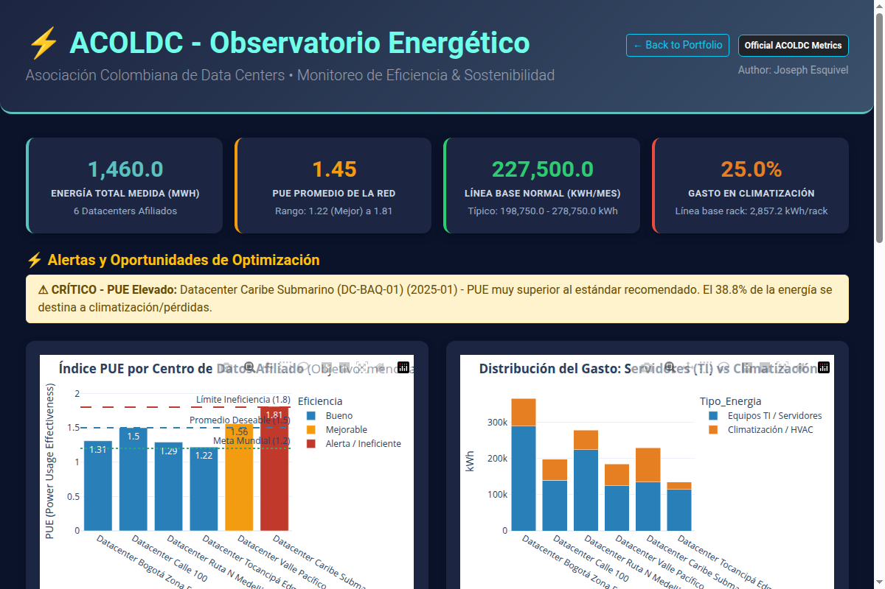
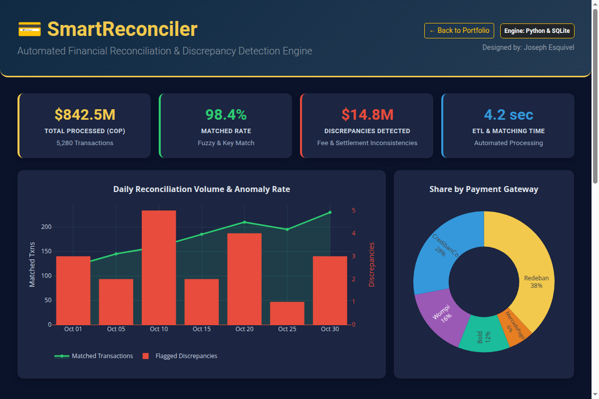
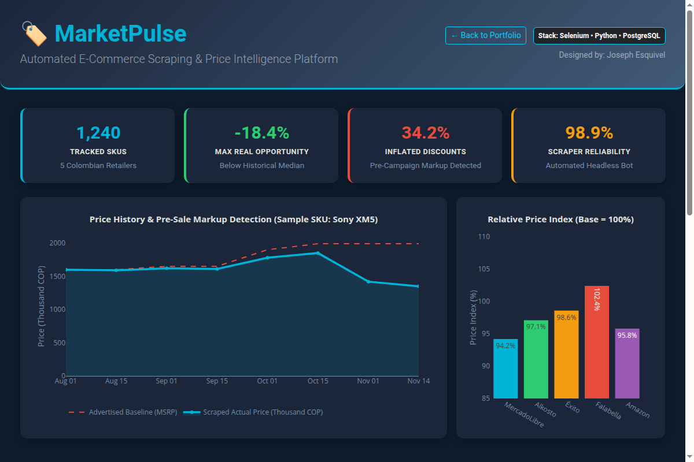

Data and databases
- SQL
- Modeling and normalization of relational databases
- Relational database programming
- Analytical thinking and data interpretation
Engineering Software undergraduate student with a 1 year of experience as data analyst in the accountant area. I'm apassionate to detect patrons over the data and build the software that make its possible
I am based in Bogotá, Colombia. My professional path began in finance and data, where I developed a strong interest in exactness, structure, and decision-making based on information. Today I am building my career as a software engineer with a focus on data analysis, automation, and solutions that simplify processes and improve business performance.
Open each position to see the work I have done.
Open each program to see the details.
These are the tools and abilities I have developed in my professional and academic journey.
These are some academic and personal projects that reflect my interests in data, development, and process improvement.

⚡ Live Demo ACOLDC Energy MonitorStatistical and energy efficiency software system developed for the Colombian Data Center Association (ACOLDC). Standardizes nationwide multi-operator data collection, calculates PUE/DCiE metrics, establishes typical consumption baselines, and generates interactive executive dashboards.

⚡ Live Demo SmartReconcilerAutomated financial reconciliation and anomaly detection engine designed for multi-channel retail. Employs fuzzy matching and deterministic rules to reconcile POS transactions against payment gateway settlements, automatically flagging fee overcharges and processing drifts.

⚡ Live Demo MarketPulseAutomated e-commerce scraping and price intelligence platform. Deploys headless Selenium web bots scheduled via Linux cron to track dynamic pricing across major retailers, evaluate historical volatility, and expose artificial pre-campaign discount markups.
If you have an opportunity for internships, collaboration, or work, I would be glad to connect.